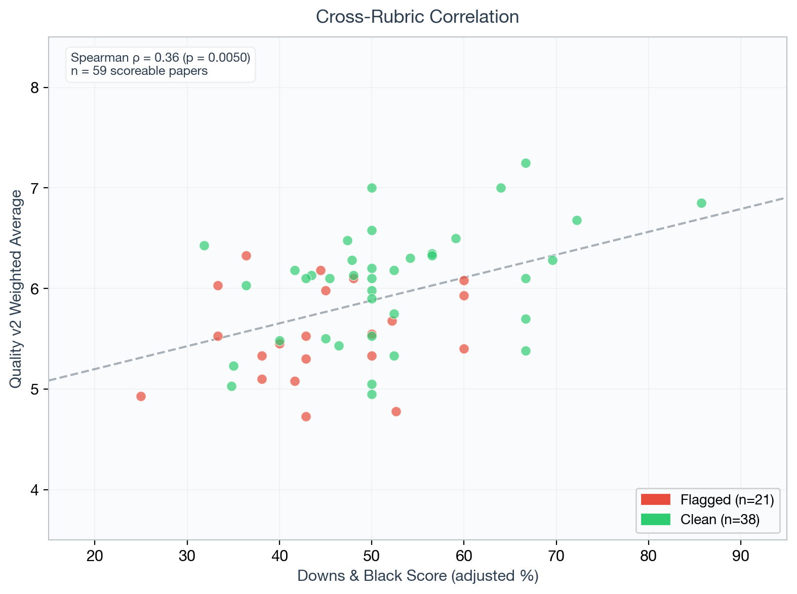
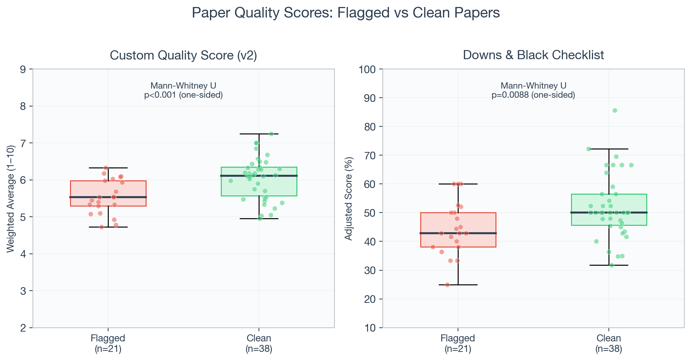
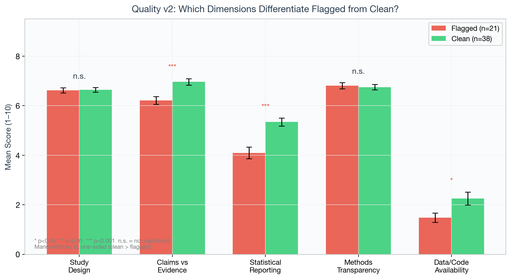
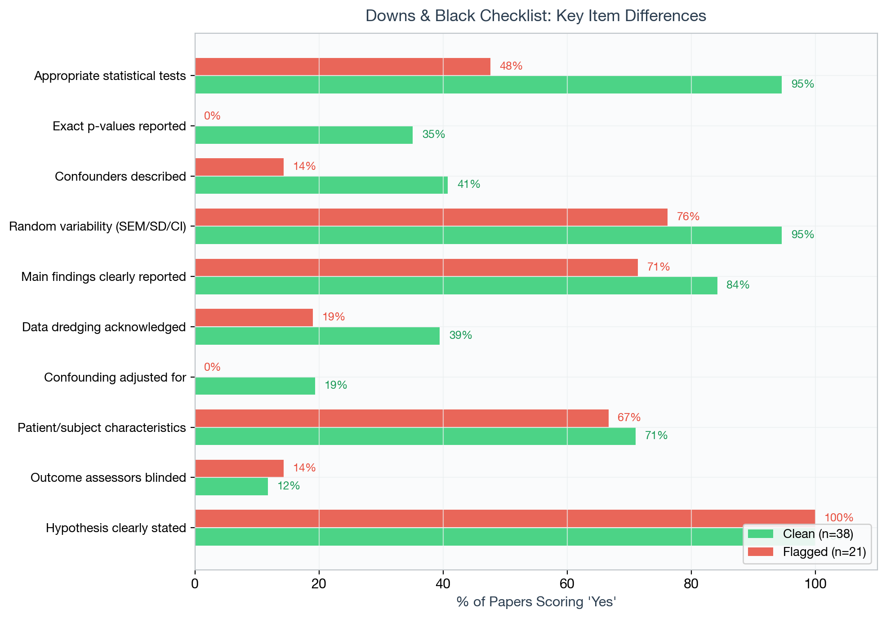

Key Finding
Papers flagged by Imagetwin for integrity issues (retracted, image duplication, PubPeer comments) score significantly lower on both scoring vectors than clean papers. The gap is driven by statistical reporting quality and claims-vs-evidence alignment (p<0.0001 and p=0.0006 respectively). This was independently validated by OpenAI's GABRIEL framework with 0.98 Spearman correlation.
What This Is
This project builds an automated, continuous quality measure for Alzheimer's research papers. The goal is not fraud detection — it's measuring reporting quality heterogeneity for use as a variable in economics-of-science regressions.
Each paper is scored by an LLM (GPT-4o) against two complementary rubrics. The scores are validated against known integrity flags from Imagetwin's ground truth dataset (retracted papers, image duplications, PubPeer flags).
Scoring Methodology
Vector 1 Downs & Black (1998)
Validated 27-item binary checklist with 10,000+ citations. Covers reporting, external validity, internal validity (bias + confounding), and statistical power.
- Score: 0–28 (item 5 allows 0/1/2)
- NA-adjusted: inapplicable items excluded from denominator
- Bands: Excellent (≥90%), Good (≥70%), Fair (≥50%), Poor (<50%)
Vector 2 Custom Quality Dimensions
Five scored dimensions (1–10 each) designed to catch what checklists miss — the quality of reporting, not just its presence.
- Study Design — rigor of experimental/analytical approach
- Claims vs Evidence — proportionality of conclusions
- Statistical Reporting — exact p-values, CIs, corrections
- Methods Transparency — replicability of protocols
- Data/Code Availability — open science practices
Validation Results
Scored 59 papers (scoreable empirical studies out of 65 total). Papers are labeled as "flagged" or "clean" based on Imagetwin's independent integrity assessments.
v2 Quality Score — Flagged vs Clean
| Metric | Test | p-value | Interpretation |
|---|---|---|---|
| v2 Quality (overall) | Welch's t-test | p = 0.0006 | Flagged papers score significantly lower |
| Downs & Black | Welch's t-test | p = 0.0088 | Flagged papers score significantly lower |
| Statistical Reporting (v2) | Welch's t-test | p < 0.0001 | Strongest individual dimension |
| Claims vs Evidence (v2) | Welch's t-test | p = 0.0006 | Second strongest dimension |
| GABRIEL correlation | Spearman | r = 0.98 | Independent validation (no shared prompt DNA) |
Figures

Figure 1: Scatter plot comparing v2 Quality Score (x-axis) with Downs & Black percentage (y-axis) for all scoreable papers. Red diamonds = flagged papers. Blue circles = clean papers. Dashed line = linear regression fit. Both measures correlate and flagged papers cluster in the lower-left quadrant.

Figure 2: Distribution of overall weighted integrity scores across all scored papers, showing the spread of quality.

Figure 3: Breakdown of v2 quality scores by dimension. Statistical reporting and claims-vs-evidence show the largest spread, indicating these dimensions drive the flagged/clean separation.

Figure 4: Item-level Downs & Black responses across papers, showing which reporting standards are most commonly met or missed.
Rubric Architecture (v2)
The v2 rubric uses type-specific routing — papers are classified by study type, then scored against the appropriate reporting guideline and risk-of-bias tool.
| Paper Type | Reporting Checklist | Risk of Bias Tool |
|---|---|---|
| Animal | ARRIVE 2.0 Essential 10 | SYRCLE |
| ML / Prediction | TRIPOD+AI | PROBAST |
| Observational | STROBE | Newcastle-Ottawa Scale |
| GWAS | STREGA | Custom (8 domains) |
| Clinical Trial | CONSORT | Cochrane RoB 2 |
| Review | PRISMA | AMSTAR 2 |
Plus 8 cross-cutting flags applied to all papers: claims proportionality, round p-values, missing CIs, no limitations discussion, baseline imbalance, contradictory results, funding/COI silence.
LLM Data Extraction
Since the quality gap is driven by statistical reporting, we tested structured extraction of every statistical test from each paper.
Flagged zakaria2015 (animal)
Student's t-test: ROS | LPS vs ctrl | p<0.001
Student's t-test: viab | LPS vs ctrl | p<0.05
Student's t-test: Abeta| LPS vs ctrl | p<0.001
# 100% significant, 0% exact p-values, no correction
Clean hong2021 (GWAS)
Linear reg GWAS: NfL | discovery | p=2.62e-07
Linear reg: NfL | replica | p=0.0026
Meta-analysis: NfL | combined | p=3.85e-09
# 76% significant (reports null results)
Quality scores are stable across runs (±0.5 points). Test counts vary due to counting conventions (ANOVA omnibus + post-hocs). The LLM consistently identifies the same tests and p-values.
GABRIEL Independent Validation
GABRIEL (Shleifer et al., "GPT as a Measurement Tool") is OpenAI's framework for using LLMs as measurement instruments. We tested it as an independent validation of our scoring approach.
What Worked
- rate — 0.98 Spearman correlation with our custom prompt on statistical reporting. Validates the rubric measures something real, not a prompt artifact.
What Didn't
- extract — Designed for short entities, returned title/author summaries instead of quality attributes
- discover — Surfaced paper-type confounds rather than quality differences ($0.80/paper vs our $0.03)
Interactive Explorers
v1 Integrity Explorer
Adjustable criterion weights to re-rank 40 papers by integrity indicators. Includes image analysis tabs.
Downs & Black Assessment
27-item validated checklist results with section breakdowns and item-level evidence.
Flagged vs Clean Validation
Side-by-side comparison with scatter plot, sortable table, and drilldown into both scoring vectors.
Progress & Next Steps
Stack
Python, OpenAI API (GPT-4o for testing, GPT-5.2 for scale)
pdfplumber (PDF text extraction)
Downs & Black (1998) — validated 27-item checklist
ARRIVE, STROBE, CONSORT, TRIPOD+AI, STREGA, PRISMA — reporting guidelines
SYRCLE, NOS, RoB 2, PROBAST, AMSTAR 2 — risk-of-bias tools
GABRIEL (OpenAI) — independent validation framework
Imagetwin — ground truth integrity flags